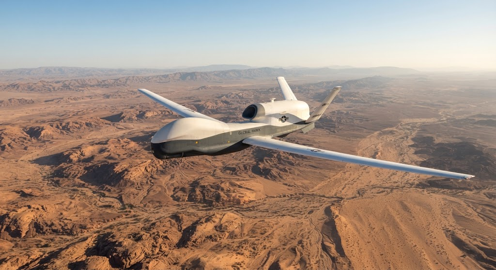

TELEMETRÍA ACTIVA // PLATAFORMA ISR // ENLACE SEGURO
🛰 RQ-4 GLOBAL HAWK
UAV Estratosférico de Alta Persistencia

Desarrollador: Northrop Grumman (programa principal; desarrollo original de Teledyne Ryan Aeronautical).
Tipo: UAV/UA HALE (High-Altitude, Long-Endurance) de reconocimiento, vigilancia e inteligencia (ISR), remotamente pilotado. Clasificación DoD: Grupo 5.
Envergadura: 39,8 m (130,9 pies).
Peso estimado: 6.781 kg en vacío; 14.628 kg de peso máximo de despegue. Para tu ficha recomiendo poner 14.628 kg (MTOW), porque representa mejor el peso operativo máximo de la plataforma.
Altitud operativa: Hasta aproximadamente 18.288 m (60.000 pies) en la configuración RQ-4B; algunas fuentes oficiales de las primeras variantes indican hasta 19.812 m (65.000 pies). Para mantener una cifra coherente para el RQ-4 Global Hawk actual: 18.288 m.
Propulsión: 1 × turbofán Rolls-Royce North American F137-RR-100, derivado de la familia AE 3007. Empuje aproximado: 7.600 lb.
Fuente energética: Combustible aeronáutico Jet-A/JP-8, utilizado por su turbofán.
Capacidades Técnicas: Plataforma de vigilancia de gran autonomía capaz de operar durante más de 34 horas y transmitir información de inteligencia prácticamente en tiempo real. Según la variante, puede integrar sensores electro-ópticos/infrarrojos (EO/IR), radar de apertura sintética (SAR), Moving Target Indicator (MTI) y SIGINT. El Block 40 incorpora el radar RTIP AESA para funciones SAR/MTI.
Funciones Estratégicas: Reconocimiento aéreo de largo alcance, vigilancia persistente, recopilación de inteligencia IMINT/SIGINT, seguimiento de objetivos terrestres y vigilancia de amplias regiones. Puede proporcionar información ISR a fuerzas desplegadas y centros de mando sin necesidad de llevar tripulación a bordo.
Estado Actual: ACTIVO. El RQ-4 continúa formando parte de las capacidades ISR de EE. UU. En 2026, la USAF mantiene operaciones del sistema y ha realizado ajustes de despliegue; por ejemplo, la misión RQ-4 fue trasladada temporalmente de Grand Forks a Robins durante reparaciones de pista, mientras que la USAF anunció la transición permanente de Global Hawks de Andersen, Guam, hacia Yokota, Japón.
⟵ Volver a Plataformas UAV
Tipo: UAV/UA HALE (High-Altitude, Long-Endurance) de reconocimiento, vigilancia e inteligencia (ISR), remotamente pilotado. Clasificación DoD: Grupo 5.
Envergadura: 39,8 m (130,9 pies).
Peso estimado: 6.781 kg en vacío; 14.628 kg de peso máximo de despegue. Para tu ficha recomiendo poner 14.628 kg (MTOW), porque representa mejor el peso operativo máximo de la plataforma.
Altitud operativa: Hasta aproximadamente 18.288 m (60.000 pies) en la configuración RQ-4B; algunas fuentes oficiales de las primeras variantes indican hasta 19.812 m (65.000 pies). Para mantener una cifra coherente para el RQ-4 Global Hawk actual: 18.288 m.
Propulsión: 1 × turbofán Rolls-Royce North American F137-RR-100, derivado de la familia AE 3007. Empuje aproximado: 7.600 lb.
Fuente energética: Combustible aeronáutico Jet-A/JP-8, utilizado por su turbofán.
Capacidades Técnicas: Plataforma de vigilancia de gran autonomía capaz de operar durante más de 34 horas y transmitir información de inteligencia prácticamente en tiempo real. Según la variante, puede integrar sensores electro-ópticos/infrarrojos (EO/IR), radar de apertura sintética (SAR), Moving Target Indicator (MTI) y SIGINT. El Block 40 incorpora el radar RTIP AESA para funciones SAR/MTI.
Funciones Estratégicas: Reconocimiento aéreo de largo alcance, vigilancia persistente, recopilación de inteligencia IMINT/SIGINT, seguimiento de objetivos terrestres y vigilancia de amplias regiones. Puede proporcionar información ISR a fuerzas desplegadas y centros de mando sin necesidad de llevar tripulación a bordo.
Estado Actual: ACTIVO. El RQ-4 continúa formando parte de las capacidades ISR de EE. UU. En 2026, la USAF mantiene operaciones del sistema y ha realizado ajustes de despliegue; por ejemplo, la misión RQ-4 fue trasladada temporalmente de Grand Forks a Robins durante reparaciones de pista, mientras que la USAF anunció la transición permanente de Global Hawks de Andersen, Guam, hacia Yokota, Japón.